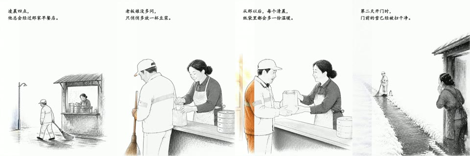

NEW EFFECT PLATES
同一套底片，只比较特效
单图效果统一使用测试底片 A，转场统一使用 A/B；卡片和实机演示使用完全相同的输入。
D:\GITHUB PROGRAM / VISUAL CAPABILITY INDEX
扫描本地 76 个顶层项目。 整理为统一生成能力图鉴。 画风、视频、演示、字幕、声音， 以及 142 个真实特效演示， 全部在同一处比较。
THE WHOLE WORKBENCH
这不是软件清单，而是按“最后能产出什么”重新编排的工作台。
NEW EFFECT PLATES
单图效果统一使用测试底片 A，转场统一使用 A/B；卡片和实机演示使用完全相同的输入。
REAL OUTPUT

LIVE MOTION
40 GENERATIVE WORKFLOWS
换个关键词或回到全部分类。
20 VERIFIED VISUAL RECIPES
换一个关键词或清除当前筛选。
142 LIVE HYPERFRAMES DEMOS
单图效果只用固定 A，转场只用固定 A/B；点开后仍用同一套底片播放对应特效。
尝试 shader、caption、transition 或 code。